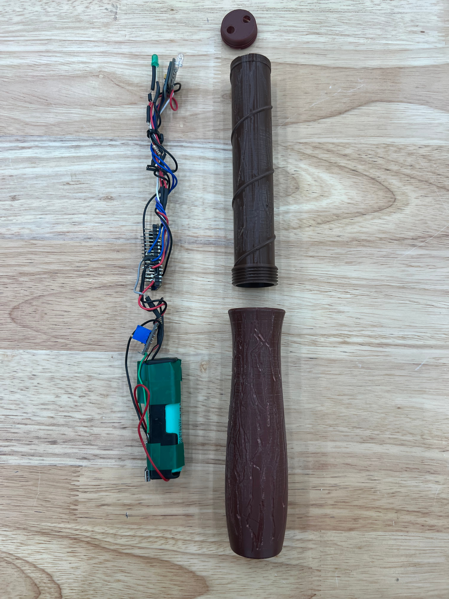
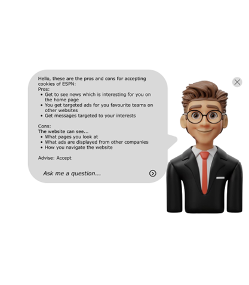

Magic Wand: An IR-powered, gesture based remote
During this project, for one of my Master courses, we worked in groups to ideate and prototype a functional product. Over the course of the project, I was tasked with programming the components, as well as taking care of the electric wiring.
We designed and built a working remote, that works with different gestures to perform different commands. In the end, we managed to make so that it can turn devices on and off, as well as cycle through different settings.
I learned a lot about user testing, prototyping and product design and ultimately I am quite proud of the project.

LawyAir: An extension to help you understand online privacy
For one of my courses, we got assigned groups and paired with a real life client. This client presented us with a problem: “People have no clue what they are consenting to and do not have the amount of control over their data they should have.” An interesting problem with many different angles to tackle it from.
It was important that we built a tool that actually informs people of what they consent to online, rather than just making declining cookies for instance just easier. We brainstormed many different ideas, ranging from a website that informs people on the topic, to a tool that helps you fill in cookie consent forms automatically.
We settled on designing an extension for your browser, that pops up and summarizes what is in cookie consent forms. In the form of a small “lawyer” avatar, that you can ask questions to and interact with, to deliver the information in an easily digestible manner. My contributions were mainly centered around the user research. I designed personas and build user stories around the interviews we held and suggested improvements to the prototype based on the feedback we received.

Visualizing Within-Country migration in the Netherlands